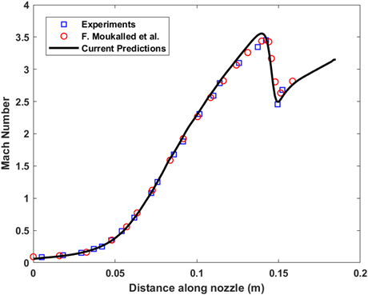
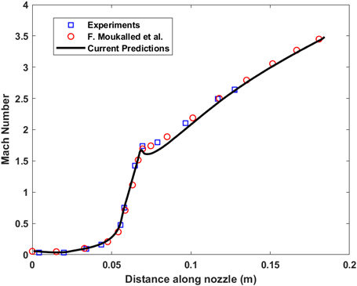
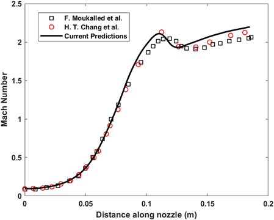
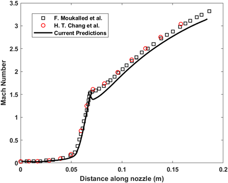

Tutorial Cases
Problem Description
This validation case simulates the inviscid transonic gas flow through a Convergent-Divergent (CD) nozzle (JPL nozzle).
The axisymmetric simulation aims to validate the solver's capability to simulate supersonic flows and capture shock waves in the flow field.
The nozzle geometry is taken from Back et. al, and the inlet and throat curvature points is generated in MATLAB. These data points
are then provided to modify the boundaries of domain block in the blockMeshDict. The MATLAB code is available with the case files.
The CD nozzle mesh along with the boundaries marked are shown in the figure and the boundary conditions are presented in the table.
Initially pressure and temperature is 1.0 bar and 300 K and is set to be uniform throughout the domain. The specific heat capacity
of the gas is 1.07 J/kg.K and the ideal gas equation of state is employed. The molecular weight of the gas is 28.786 kg/kmol.
JPL Nozzle Mesh with Boundaries
Boundary Conditions
| Variables | Inlet | Outlet | Wall | Wedge faces |
|---|---|---|---|---|
| $P$ | Total Pressure (10.34 bar) | zeroGradient | zeroGradient | cyclic |
| $\boldsymbol{u}_g$ | PressureDirectedInletVelocity (inlet direction: +z axis) | zeroGradient | Slip | cyclic |
| $T_g$ | Total Temperature (555 K) | zeroGradient | zeroGradient | cyclic |
Numerical Schemes
Initially, the simulation is conducted till steady state (t = 0.01 s) with first orderupwind scheme for all
the convective terms. To improve the accuracy the the convective schemes are updated to vanLeer scheme for
all the convective terms. The generalized Crank Nicolson scheme is used for time integration for second order
accuracy and stability.
Instructions to Run the Simulation
Before beginning, ensure you source the native OpenFOAM-v2112 bashrc file and the RocPerf-CFD bashrc file.
The case file is available in the directory tutorials/JPL-Nozzle. Copy the case file to your working directory. To mesh the geometry, run:
blockMesh
You can run the simulation in either serial or parallel mode:
Option A: Serial Run
rocketMotor
Option B: Parallel Run
First, perform mesh decomposition, then run with MPI (default is 8 processors):
decomposePar
mpirun -np 8 rocketMotor -parallel
Note: The number of processors can be adjusted in the decomposeParDict file.
To obtain accurate simulation results (as shown in the plots below), simply double the mesh size in the
blockMeshDict file before running the mesh generation.
Results
The predicted centreline Mach number and the wall Mach number is plotted with experimental data and the computational data from F. Moukalled et al.
|  |
 |
References
- Moukalled, F., Darwish, M., and Sekar, B., “A Pressure-Based Algorithm for Multi-Phase Flow at All Speeds,” Journal of Computational Physics, Vol. 190, No. 2, 2003, pp. 550–571. doi: 10.1016/S0021-9991(03)00297-3.
- Back, L., and Cuffel, R., “Detection of Oblique Shocks in a Conical Nozzle with a Circular-Arc Throat,” AIAA Journal, Vol. 4, No. 12, 1966, pp. 2219–2221. doi: 10.2514/3.3881.
- Chang, H. T., Hourng, L. W., Chien, L. C., and Chien, L. C., “Application of Flux-Vector-Splitting Scheme to a Dilute Gas-Particle JPL Nozzle Flow,” International Journal for Numerical Methods in Fluids, Vol. 22, No. 10, 1996, pp. 921–935. doi: 10.1002/(SICI)1097-0363(19960530)22.
Problem Description
This validation case simulates the inviscid transonic dusty gas flow in a Convergent-Divergent (CD) nozzle (JPL nozzle). The axisymmetric simulation aims to validate the solver's capability to model gas-particle interactions. The nozzle geometry and mesh is same as the previous case. The particle phase is introduced at the inlet. The boundary conditions for the gas and particle phase flow variables are presented in the table. Initial condition is taken to be steady state solution of gas phase from the previous tutorial. The particle phase volume fraction is initially zero. The gas phase properties remains same as the previous case. The particle phase density is 4004.62 kg/m^3 and the specific heat capacity of the particle phase is 1.38 kJ/kg.K . The diameter of the particle is 20 $\mu$m. The velocity and temperature slip at the inlet is assumed to be zero in this case. The coefficient of drag and Nusselt number correlation used for this validation simulation are given by, $$ C_D = \frac{24}{Re_p}\left(1 + 0.15Re_p^{0.687} + \frac{0.0175Re_p}{1 + 4.25\times 10^4Re_p^{-1.16}}\right) $$ $$ Nu = 2 + 0.459Re_p^{0.55}Pr^{0.33} $$
JPL Nozzle Mesh with Boundaries
Boundary Conditions
| Variables | Inlet | Outlet | Wall | Wedge faces |
|---|---|---|---|---|
| $P$ | Total Pressure (10.34 bar) | zeroGradient | zeroGradient | cyclic |
| $\boldsymbol{u}_g$ | PressureDirectedInletVelocity (inlet direction: +z axis) | zeroGradient | Slip | cyclic |
| $\boldsymbol{u}_p$ | sameAs - gas phase ($\boldsymbol{u}_g = \boldsymbol{u}_p$) | outletInlet (no reverse flow) | Slip | cyclic |
| $T_g$ | Total Temperature (555 K) | zeroGradient | zeroGradient | cyclic |
| $T_p$ | sameAs - gas phase ($T_p = T_g$) | zeroGradient | zeroGradient | cyclic |
Numerical Schemes
The convective terms are discretized using second order shock capturingvanLeer scheme. The generalized Crank Nicolson scheme is used for time integration for second order
accuracy and stability.
Instructions to Run the Simulation
Before beginning, ensure you source the native OpenFOAM-v2112 bashrc file and the RocPerf-CFD bashrc file.
The case file is available in the directory tutorials/JPL-TwoPhase-Nozzle. Copy the case file to your working directory. To mesh the geometry, run:
blockMesh
You can run the simulation in either serial or parallel mode:
Option A: Serial Run
rocketMotor
Option B: Parallel Run
First, perform mesh decomposition, then run with MPI (default is 8 processors):
decomposePar
mpirun -np 8 rocketMotor -parallel
Note: The number of processors can be adjusted in the decomposeParDict file.
To obtain accurate simulation results (as shown in the plots below), simply double the mesh size in the
blockMeshDict file before running the mesh generation.
Results
The predicted centreline Mach number and the wall Mach number is plotted with experimental data and the computational
data from F. Moukalled et al. A similar analysis can be repeated for 2 $\mu$m particle size. The particle size
can be changed from the phaseProperties file in the constant folder.
|  |
 |
References
- Moukalled, F., Darwish, M., and Sekar, B., “A Pressure-Based Algorithm for Multi-Phase Flow at All Speeds,” Journal of Computational Physics, Vol. 190, No. 2, 2003, pp. 550–571. doi: 10.1016/S0021-9991(03)00297-3.
- Back, L., and Cuffel, R., “Detection of Oblique Shocks in a Conical Nozzle with a Circular-Arc Throat,” AIAA Journal, Vol. 4, No. 12, 1966, pp. 2219–2221. doi: 10.2514/3.3881.
- Chang, H. T., Hourng, L. W., Chien, L. C., and Chien, L. C., “Application of Flux-Vector-Splitting Scheme to a Dilute Gas-Particle JPL Nozzle Flow,” International Journal for Numerical Methods in Fluids, Vol. 22, No. 10, 1996, pp. 921–935. doi: 10.1002/(SICI)1097-0363(19960530)22.
Problem Description
Simulation of the internal ballistics of a cylindrical grain solid rocket motor under steady-state conditions. This case validates the solver's handling of mass injection from the burning surface and the subsequent flow development in the port area.

Fig 3.1: Center-perforated grain geometry.
Case Setup & Boundary Conditions
| Patch Name | Condition Type | Details |
|---|---|---|
| Burning Surface | FlowRateInletVelocity | Mass flux based on burn rate |
| Head End | No-Slip Wall | Adiabatic |
| Nozzle Exit | Supersonic Outlet | ZeroGradient |
Results
Streamlines and pressure contours inside the combustion chamber.

Problem Description
This advanced case demonstrates the dynamic mesh capabilities of the framework. It models the regression of the propellant grain over time using Saint-Robert's Law ($r = aP^n$). The solver automatically updates the mesh topology at every time step.

Fig 4.1: Moving mesh strategy.
Case Setup & Parameters
| Parameter | Setting / Model | Notes |
|---|---|---|
| Mesh Motion | Laplacian Displacement | Diffusivity: inverseDistance |
| Regression Model | Saint-Robert's Law | $r = aP^n$ |
| Time Step | Adaptive | Max Co < 0.5 |
Results
Time evolution of the grain surface and chamber pressure.